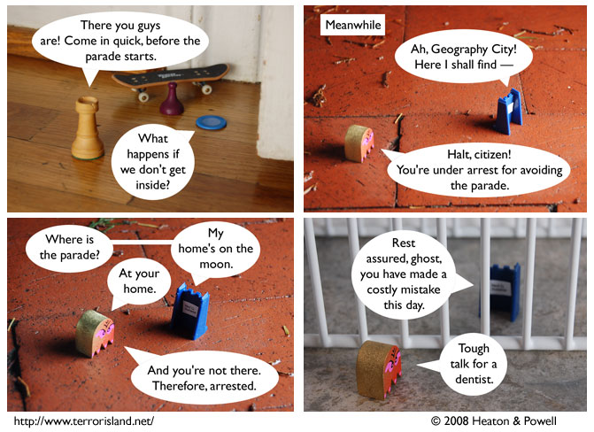

Strip #246
— Monday, January 7, 2008
Technically, the parade is at everyone’s home, not just Ned’s.
Notes, Thoughts, &c.
Ben’s Notes
Even from within jail, Ned Q. Sorceror demonstrates his uncanny abilities.
Lewis’s Notes
I want everyone to notice that Blueteen’s seemingly crazy plan resulted in the incarceration of a known supervillain. So rest assured, there is either a method to his madness, or he got randomly lucky this one time.